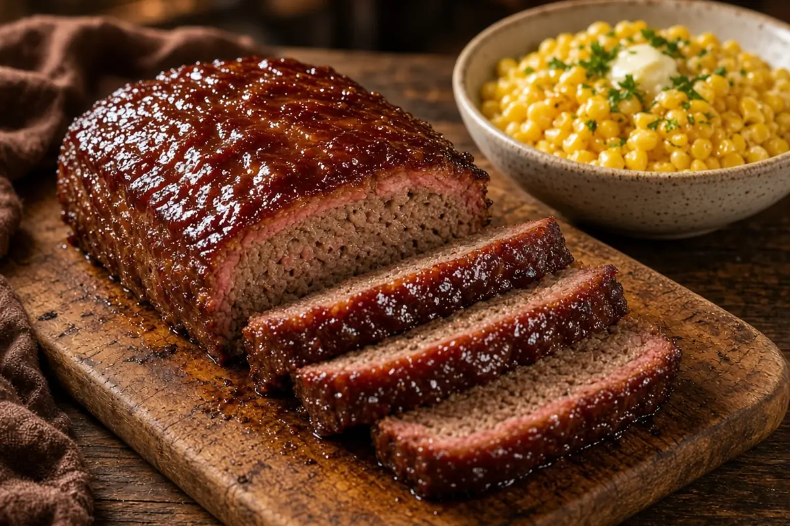

Pellet-Grill Smoked Meatloaf with Buttered Corn
A juicy beef-and-pork meatloaf smoked low on the pellet grill, lacquered with a tangy brown sugar glaze, with skillet corn finished in plenty of butter.

6 servings
By
Yield: 6 servings
Prep:
Cook:
Total:
Difficulty: Medium
Ingredients
- 1 1/2 lb ground beef, 80/20
- 1 lb ground pork
- 2 large eggs
- 3/4 cup panko breadcrumbs
- 1/2 cup whole milk
- 1 medium onion, grated
- 3 cloves garlic, minced
- 2 Tbsp Worcestershire sauce
- 1 Tbsp Dijon mustard
- 1 1/2 tsp kosher salt
- 1 tsp black pepper
- 1 tsp smoked paprika
- 1 cup ketchup
- 1/3 cup packed brown sugar
- 2 Tbsp apple cider vinegar
- 1 lb frozen sweet corn
- 3 Tbsp salted butter
- 1 Tbsp fresh parsley, chopped
Instructions
- Fill the pellet grill with hickory or cherry pellets and preheat it to 250°F, about 15 minutes.
- While it heats, stir the panko into the milk in a large bowl and let it soak 5 minutes. Add the eggs, onion, garlic, Worcestershire sauce, Dijon mustard, salt, pepper, and smoked paprika and mix well.
- Add the ground beef and ground pork and mix with your hands just until combined, 2 minutes. Shape it into a 9 by 5-inch loaf on a grill mat or a perforated pan.
- Smoke the meatloaf at 250°F for 90 minutes.
- Meanwhile, whisk the ketchup, brown sugar, and apple cider vinegar in a small bowl for the glaze.
- Brush half the glaze over the meatloaf, raise the grill to 325°F, and cook 30 minutes, until the center reads 160°F. Brush on the rest of the glaze for the last 10 minutes.
- Rest the meatloaf 10 minutes before slicing. While it rests, melt the butter in a HexClad skillet over medium heat, add the sweet corn, and cook, stirring, 8 minutes until hot and lightly browned. Season with salt and the parsley and serve with the meatloaf.
Notes: Grating the onion keeps the loaf tender with no crunchy bits. Leftover slices are great seared in butter for sandwiches the next day.